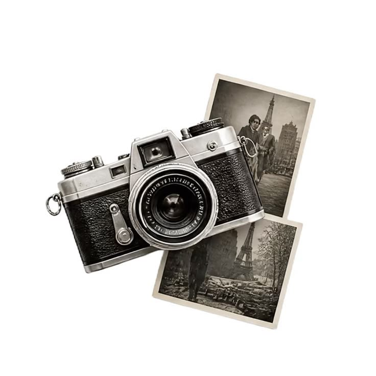
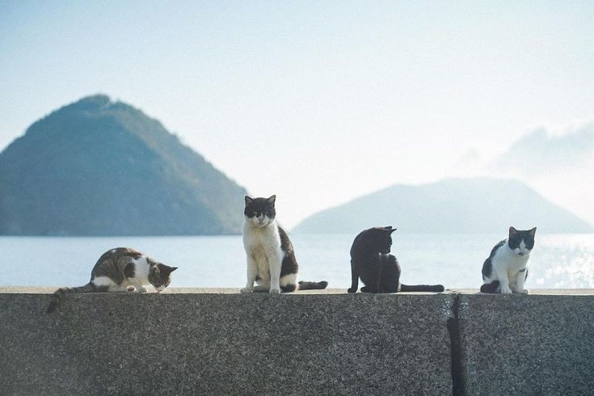
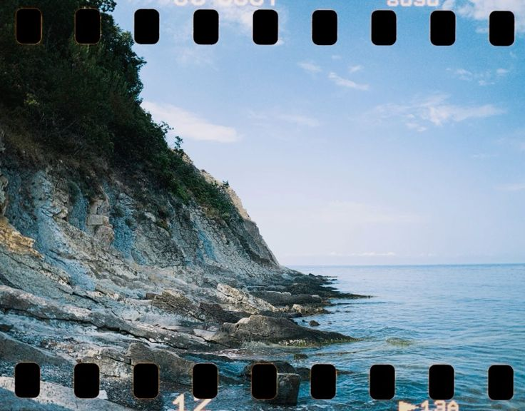
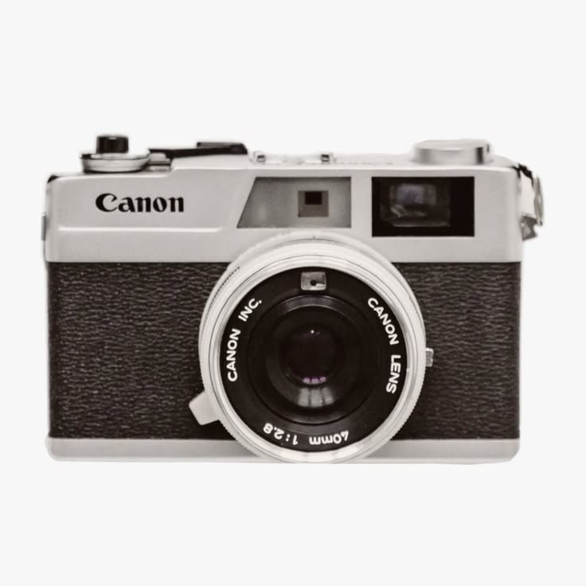
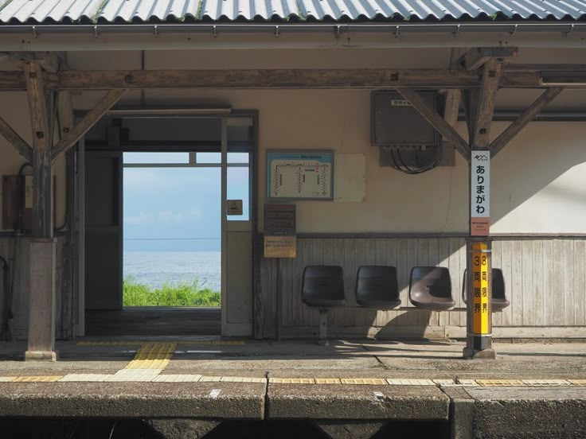

「我們按下快門，不是為了凍結時間，而是為了把那一刻吹拂過臉頰的風與光，溫柔地存進記憶。」

好照片的靈魂不在昂貴的器材，而在相機後面那顆懂得停下來凝視的心

全片幅 (Full-frame) vs APS-C 裁切係數，如何決定視角與畫質？
以傳統 35mm 菲林底片（36×24 mm）為 1.0x 全片幅基準：
等效視野 = 實體鏡頭焦距 × 裁切係數50 × 1.5 = 75mm（標準鏡瞬間變成人像中望遠鏡！）。| 片幅 | 等效倍率 | 夜間高感雜訊 | 散景虛化感 |
|---|---|---|---|
| 全片幅 (FF) | 1.0x (標準) | 極純淨 (受光多) | 更淺更迷人 |
| APS-C | 1.5x ~ 1.6x | 良好、實用 | 景深適中 |

曝光就是拿水桶在雨中接水；三者協同合作，缺一不可
只要總進光量一致，畫面明暗就完全相等：
f 值倒數原理、全檔光圈級距與畫質甜區 (Sweet Spot)
新手最容易困惑的點：「為什麼數字越小，光圈反而越大？」
f/1.4 的進光量是 f/2.8 的 4 倍，更是 f/16 的 128 倍！| 推薦光圈值 | 視覺效果 | 典型拍攝題材 |
|---|---|---|
| f/1.4 - f/2.8 | 極淺景深、背景奶油散景 | 人像寫真、咖啡廳美食、微光 |
| f/4.0 - f/5.6 | 主體清晰、交代環境細節 | 日常街拍、生活紀錄 |
| f/8.0 - f/11 | 鏡頭畫質甜區、全景清晰 | 壯麗風景、合照、建築攝影 |
| f/16 以上 | 光學繞射畫質變軟、星芒 | 夜景星芒長曝（避開常態使用） |
嚴格區分「主體運動模糊」與「相機手震」的診斷方法
手持相機時防止手震的最低極限：
「寧要雜訊，不要晃動」—— 破除新手對高 ISO 的過度恐懼
很多新手死活不肯把 ISO 調過 400，導致室內快門跌破 1/15s，整張照片拍出來全是相機晃動的廢片！
PASMB 模式核心邏輯與初學者的黃金起手式
| 模式 | 你手動決定 | 相機自動計算 |
|---|---|---|
| P (程式自動) | ISO、曝光補償 | 光圈、快門 |
| Av / A (光圈先決) | 光圈大小、ISO | 快門速度 (最推薦日常首選) |
| Tv / S (快門先決) | 快門速度、ISO | 光圈大小 (運動動態首選) |
| M (全手動) | 光圈、快門、ISO 全自己來 | 無 (完全手控) |

透視只由「距離」決定！廣角張力 vs 長焦空間壓縮感
硬光、軟光、光的方向性與大自然最美麗的黃金一小時

如何透過視覺引導，讓觀者的視線一眼落入故事的核心？
不要直接對準主體單調平拍！尋找身邊的元素作為「前景框架」：
定焦鏡練習走位與攝影眼；變焦鏡提供不可替代的構圖靈活性
Cambridge in Colour 規範的科學工序，防止噪點激發與色階斷裂
建立健康通透的攝影心態，拒絕被偽概念綁架
拿起相機，走入街道，去捕捉屬於你的光影動人瞬間
「你的前 10,000 張照片，是你最差的照片。」
— 亨利·卡蒂爾-布列松 (Henri Cartier-Bresson)
不要害怕拍出廢片，每一張手震或曝光失誤的照片，都在為你的直覺累積養分。
享受在旅途中按下快門的感動，祝你拍攝愉快！